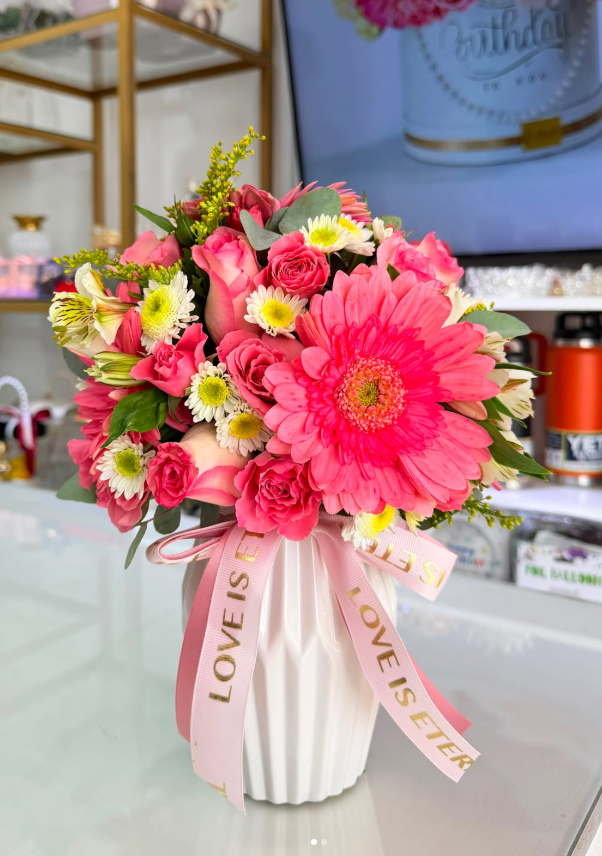

Una flor bendita,
una marca con propósito.
Blanco y dorado, como el lirio que nos da el nombre. Así nació LIRIOS Floristería.

El origen del nombre
LIRIOS Floristería nace del aroma y la elegancia del lirio: una flor blanca, fragante, con detalles dorados, que para nosotros es una flor bendita. Quisimos darle gracias a Dios con una flor bendita — y así surge nuestro nombre. Por eso nuestra marca viste blanco y dorado, los mismos colores del lirio.
De la crisis a la oportunidad
Nuestra historia empezó en casa, de la mano de Axel y Aldo, con el deseo de ofrecer calidad, elegancia y prestigio. En un momento de crisis, cuando otros solo vieron dificultad, nosotros — gracias a Dios — vimos una oportunidad. De ahí nació LIRIOS Floristería, el 6 de julio de 2024, en El Progreso, Yoro.
Nos caracteriza la originalidad: cada diseño, empaque y detalle nace de la creatividad de Axel y Aldo, sin copiar ni replicar el trabajo de nadie. Trabajamos siempre a la vanguardia, innovando en tendencias y en exclusividad, con un mismo objetivo desde el primer día: garantizar calidad, frescura y un trato como el que a nosotros nos gustaría recibir.
Así trabajamos
Flores frescas
Seleccionamos las flores cada mañana y preparamos tu arreglo el mismo día de la entrega.
Hecho a mano
Nada sale en serie: cada ramo se arma flor por flor, con envoltura y lazo elegidos para la ocasión.
Trato cercano
Tu pedido se coordina por WhatsApp, de persona a persona. Nos ajustamos a lo que necesitas.